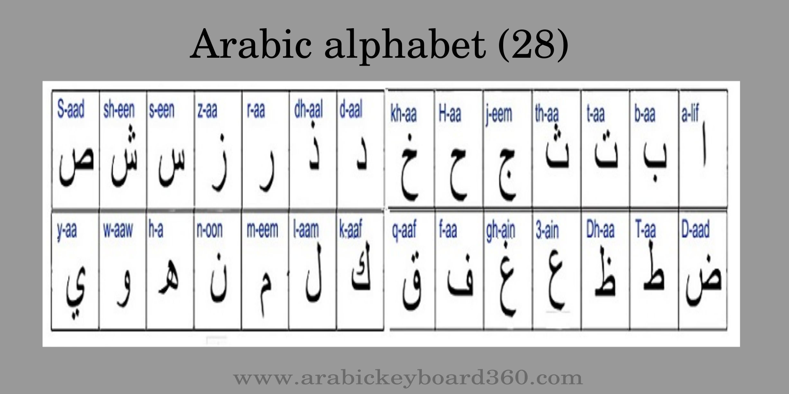
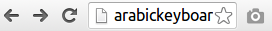
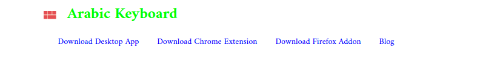
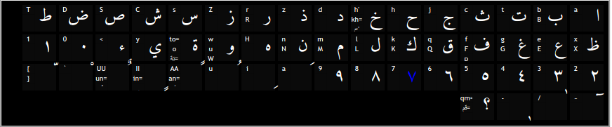
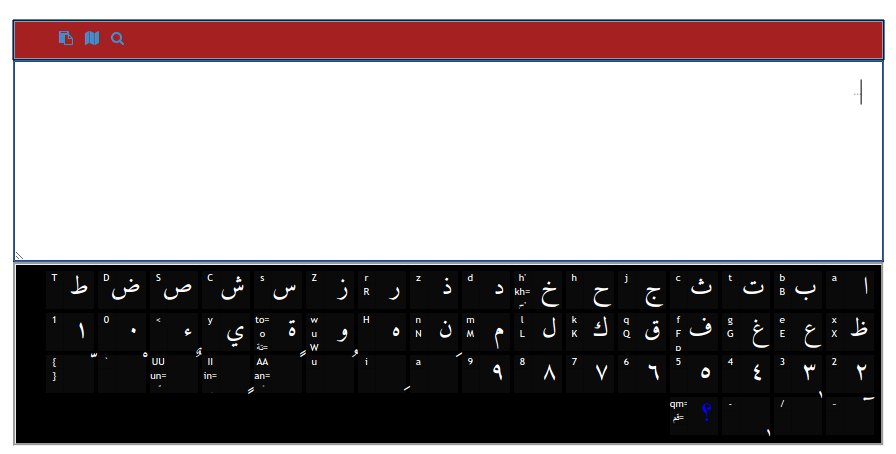
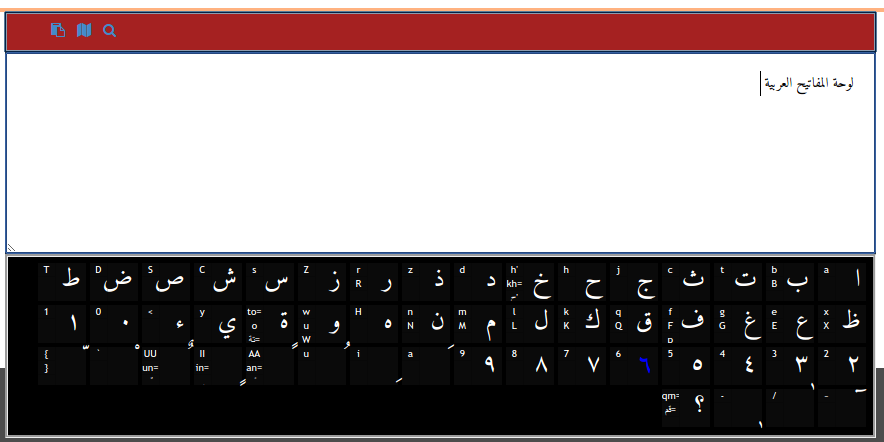
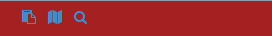

The Arabic Keyboard (لوحة المفاتيح العربية) HowTo
What is the virtual online arabic keyboard ?
The arabic keyboard (لوحة المفاتيح العربية) is an online service which offers you a virtual keyboard (not a physical keyboard) to write in Arabic language in case you don't have a physical arabic keyboard attached with your computer .You have two options if you want to use this arabic keyboard : Type english characters or letters ,the virtual keyboard takes care of converting or transliterating the characters to their Arabic equivalents. Use the mouse to enter the characters directly via the keys appearing on the virtual keyboard on this site . Following any option you choose you need to copy the final typed text and paste it on the desired text box.
How to copy text in Arabic keyboard (لوحة المفاتيح العربية)
The arabic keyboard doesn't type characters for you you need to type them either via your latin/english physical keyboard or use the mouse and then select the typed text and copy it either via keyboard combination CTRL+A then CTRL+C and then paste with CTRL+V or use your mouse by clicking the right hand menu and choose copy of course after selecting the text then again on the target area click with your mouse,when the right menu appears choose paste command.
Some background information about the Arabic language
The arabic language is a right-to-left language used by people on the Middle East and North Africa ,it has an alphabet which contains 28 letters .The Arabic language alphabet is also used to type other non arabic language such as the persian and Urdu languages .
Here is an illustartion of 28 letters in the arabic alphabet : 
Reasons of why people are using online and virtual arabic keyboards
There are many reasons of why people are using online arabic virtual keyboards such as :
In arabic countries people use many languages alongside with the arabic language .In many countries English and French are used so latin keyboard are used instead of arabic keyboards but many people need to type in Arabic for example when they are not working,when chatting or social networking as examples so they need both an arabic and latin keyboards .So instead of using keyboards which support both latin and arabic you can use a software system or an online service to type in Arabic .
Also if you are travelling to another country and you are using a computer there ,in a cycbercafe for example ,and want to type in Arabic language then again you can use our online service.
How to use the Arabic keyboard with images
In this small tutorial i will show you how you can use this
online Arabic Keyboard using screenshots so you can understand better how to use it for typing arabic letters in case you don't have a physical keyboard at hand .
First step of how to use the arabic keyboard
You need to visit the wbesite of an arabic keyboard service but since you are here reading this tutorial then you are already on website that offers the service ,so just skip this step and follow with the second step  When you visit our website you find many links

The first link is link that allows you to download the Desktop version of our
arabic keyboard which you can use when you have no internet connexion.The Desktop is available for both operating systems Linux and Windows so if you need or prefer to use a Dektop application instead of the online service you can downlaod the application for Windows or Linux and start typing Arabic without having to visit this website all the time to just type some text in Arabic. You can use the second link to
download a Chrome extension ,yes our virtual keyboard is available as a Chrome extension too so if you use Chrome browser you can use this extension instead of the online service. You can use the third link,to
download a Firefox addon for our arabic keyboard .If you use Firefox then you are welcome to use our extension for free so you don't have to visit this online service whenever you want to type in Arabic letters. The last link takes to our
blog in which you are going to find any useful articles and tutorials related to
Arabic language tools That's all for the first step now head to the second step
Second step
In the second step you just need to start typing your text using your physical keyboard or just your mouse You can use the mouse to click on any key which will appear on the top text area

Here is the text area where your typed text will show up

Now after typing your text ,your text will be ready in the text area
Now go to the last step
Third step
After typing the desired text ,copy and paste it where you want it to be

Again to copy the text you have typed you can use your keyboard shortcuts or the right menu when clicking the mouse.
You have also many options in your keyboad.Once you have typed the text you can call other actions on the text .

Copying the typed text.
Translating the typed text with Google Translate.
Searching on Google using your text